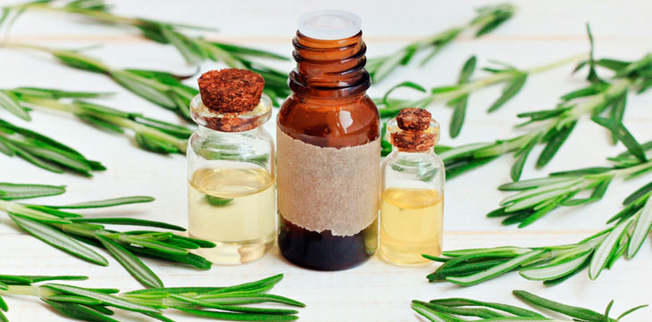

El romero es una planta aromática procedente de la región mediterránea, caracterizada por su amargo y cálido
sabor. Es un arbusto muy apreciado en el mundo culinario, pues aporta un agradable aroma y sabor a los
alimentos con los que se combina. Pero además, el romero también es conocido por sus diferentes usos para
la salud en la medicina natural.
Es una excelente fuente de hierro, calcio y vitamina A, C y B-6, pudiéndose utilizar como aceite esencial,
té o extracto líquido.
Esta importante planta medicinal vamos a hablar por la solicitud de Patty, una seguidora de Alabama. Ella
es una encantadora persona, muy conversadora, profesional de la abogacía, casada y madre de dos hijos
adolescentes. Cuando Patty me contactó me comentó, que estaba buscando información sobre el romero.
Ella me decía, que sin darse cuenta el estrés fue ganando terreno en su rutina diaria, generándole mucha
ansiedad. Esto le causó insomnio, problemas digestivos y caída del cabello. Patty recordó que su abuela
siempre tomaba infusiones de romero y le hablaba de sus numerosos beneficios.
Ella me dijo, que creía recordar que entre los beneficios del romero, su abuela mencionaba el de combatir
los problemas nerviosos. Patty deseaba confirmar si realmente el romero podría ayudarla a restablecer su
equilibrio emocional, pues no quería acudir a fármacos que podrían provocarle reacciones adversas.
